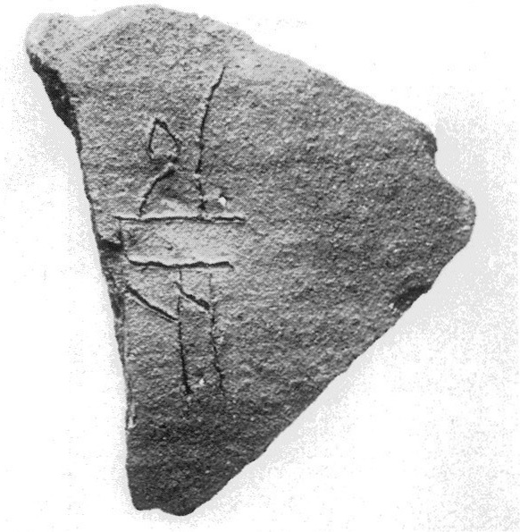
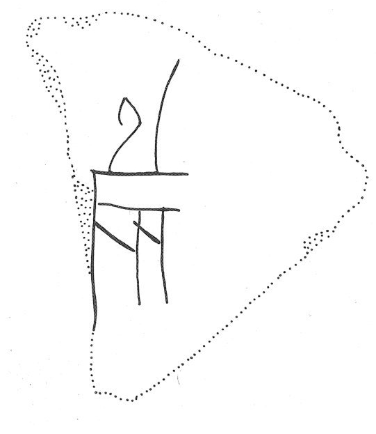

-
KEZb5
Names
KEZb5, KE Zb 5
Support
Clay vessel
Location
Kea
Findspot
Unavailable


Scribe
Unavailable
Context
Late Minoan IB
1500-1450 BCE
Dimensions
Catalogue
Readings
1 1 0 VIN+RA none
𐜀
VIN+RA
𐜀
VIN+RA
KE Zb 5
(K.2005) (GORILA IV: 73), jar
or jug sherd (House A, room 1, LM IB context)
VINa+RA {*595}
GORILA (V:277) lists this ligature
as the only example of *595 (and illustrates it, V:xxiii: 60 RA's
horizontal line coterminous with *131a VIN's top horizontal line,
and *131a VIN without
the dashes within the "trellis"), but
Maurizio Del Freo points out that the photograph of the sherd
(IV:73) shows the dashes clearly and 60 RA's
horizontal line coterminous with *131a VIN's top horizontal line,
but it also shows 60 RA facing left (in the only two examples of
*594 [ZA 6b.2 and 15b.3] 60 RA faces right and is meant to sit
well above *131a VIN [it does on ZA 6b.2 but seems to sit on
*131a VIN on ZA 15b.3]).
Commentary © John Younger
References
papers/GORILA-Vol4.pdf#page=115